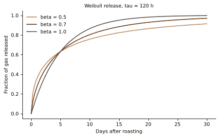

What changes in roasted coffee after it leaves the roaster, how fast, and what slows it?
After this chapter you can
Prerequisites: Chapter 1, Section 12 (aroma methods); Appendix C, Sections C.1, C.3 and C.7 (first-order kinetics, Arrhenius, gases).
A coffee roasted yesterday makes an espresso that foams wildly and tastes sharp and thin. The same coffee two weeks later pulls a calm, balanced shot. Two months later it tastes flat and faintly of cardboard. Three processes are at work here, on three different time scales: gas leaving the bean, aroma compounds leaving or reacting, and oils slowly oxidising.
This chapter separates them. Sections 1 to 3 treat the gas: how much there is, how fast it leaves, and how it disturbs brewing. Sections 4 and 5 treat staling chemistry. Sections 6 to 8 turn the chemistry into practice: packaging, storage after opening, freezing, and predicting shelf life.
Roasting breaks down sugars, amino acids and chlorogenic acids, and many of these reactions release carbon dioxide (Chapter 8). Smaller amounts of carbon monoxide and other gases form too. Part of the gas escapes during roasting; the rest stays trapped in the bean's porous structure, in cells expanded by roasting and connected by narrow channels through their walls. Calculated pressures inside freshly roasted beans are about 550 to 800 kPa, five to eight times atmospheric pressure, and roughly half of the CO2 formed is estimated to remain in the whole bean when roasting ends [1].
Freshly roasted coffee holds a few milligrams of CO2 per gram. The ideal gas law (Appendix C.7) converts that to a volume.
Worked example: How much gas is in a bag?
Problem. A 250 g bag of fresh coffee holds 6 mg of CO2 per gram. What volume would that gas occupy at 20 °C and atmospheric pressure?
Plan. Find the mass of CO2, convert to moles, and apply pV = nRT.
Solution. Mass: 250 × 6 mg = 1.5 g. Amount: 1.5/44.01 = 0.0341 mol. Volume: V = nRT/p = 0.0341 × 8.314 × 293.15/101,325 = 8.2 × 10−4 m3, or 0.82 L.
Check. That is several times the empty space in a typical bag, which is why sealed bags of fresh coffee need a one-way valve (Section 6).
The loss of CO2 from roasted coffee over time is called degassing. Smrke, Yeretzian and colleagues (2018) measured it by weighing: coffee was sealed in a container vented through a fine tube, and the slow loss of mass was logged for weeks [2]. They compared whole and ground arabica and robusta at different roast degrees and speeds. In every case, the cumulative fraction of gas released, F(t), followed a Weibull model:
| F(t) = 1 − exp[−(t/τ)β] | (5.1) |
| where | F | fraction of the releasable gas already released (fraction) |
| t | time since roasting (h) | |
| τ | time at which 63% of the gas has left (h) | |
| β | shape parameter (dimensionless) |
When β = 1, Equation 5.1 is ordinary first-order release (Appendix C.1), in which a constant fraction of the remaining gas leaves per hour. Values of β below 1 mean the release slows down faster than first order: gas near the surface leaves quickly, while gas deep in the bean lingers. A bean contains gas at many depths, and so many diffusion distances, which produces exactly this shape. Grinding shortens every distance, which is why ground coffee releases most of its gas within minutes to hours. Figure 5.1 compares three values of β.

Figure 5.1. Weibull release with τ = 120 h. All three curves cross at 63% at 120 h; compare their slopes before and after that point.
The Weibull model can be turned into a straight line by taking logarithms twice. Rearranging Equation 5.1 gives 1 − F = exp[−(t/τ)β]. Taking the natural logarithm, −ln(1 − F) = (t/τ)β. Taking it again:
| ln[−ln(1 − F)] = β ln t − β ln τ | (5.2) |
Plotting the left side against ln t gives β as the slope, and τ follows from the intercept. There is a catch: computing F requires the total amount of releasable gas, which you do not know until degassing has finished.
Worked example: Fitting jar data, and the sensitivity to the total
Problem. A jar of 100 g of whole beans loses 0.05, 0.13, 0.20, 0.28, 0.35 and 0.43 g at 6, 24, 48, 96, 168 and 336 hours after roasting. Fit β and τ, assuming the total releasable gas is 0.55 g. Then repeat with 0.50 g.
Plan. Compute F = loss/total at each time, transform with Equation 5.2, and fit a straight line by least squares (the calculator below does this).
Solution. With a total of 0.55 g: β = 0.69 and τ = 166 h (6.9 days), with R2 = 0.997. With 0.50 g: β = 0.73 and τ = 128 h, with R2 = 0.999.
Check. Both fits look excellent, so the quality of the fit cannot tell you which total is right, yet a 10% change in the assumed total shifts τ by 30%. Continue measuring until the loss curve flattens, or fit the total as a third parameter by non-linear least squares.
Escaping CO2 gets in the way of water. CO2 is much less soluble in hot water than in cold (Appendix C.7), so when hot water reaches fresh grounds, gas bubbles out quickly, swells the bed and keeps water away from parts of it. The swelling and bubbling is called the bloom. Pour-over methods pour a little water first and wait 30 to 45 seconds for the bloom to subside before continuing.
In espresso, CO2 dissolves in the water under pressure and comes out of solution as the pressure drops at the basket exit. The bubbles, stabilised by dissolved and suspended coffee material, form the foam called crema. Very fresh coffee gives thick crema; well-rested coffee, less.
Gas also disturbs measurement. Grounds that are still degassing lose mass on the scale, and bubbles in a bed or puck open local channels (Chapter 2B). Many roasters rest coffee for several days before filter brewing and for one to three weeks before espresso, but the right interval depends on the roast and method and is an experimental question (Lab L5.1).
Degassing is not staling. While gas leaves, a second, slower set of processes changes the aroma: volatile compounds escape or react, and oils oxidise. These changes, together called staling, are what make old coffee taste flat.
Marin and colleagues (2008) followed 40 volatile compounds in roasted and ground coffee for a year [3]. Most declined, even at −20 °C. They proposed a freshness index, the ratio of two compounds that move in opposite directions:
| I = [2-furfurylthiol] / [hexanal] | (5.3) |
| where | I | freshness index; falls as coffee stales (dimensionless) |
2-Furfurylthiol, a sulfur compound with a roasted, coffee-like odour (Chapter 1), declines with storage. Hexanal, a product of oil oxidation with a grassy, cardboard-like odour, rises. The index correlated with panel ratings of aroma freshness (R ≥ 0.80). Ratios of 2-methylfuran to 2-butanone and of methanethiol to hexanal were also useful. A ratio of two compounds moving in opposite directions changes faster than either alone, and analytical errors that affect both, such as small differences in sample mass, partly cancel.
Brewed coffee loses aroma within minutes on a hot plate. Sun, Fisk and colleagues traced the loss of 2-furfurylthiol to two routes [4].
Adding cysteine, which competes for the quinones, and ascorbic acid (vitamin C), which removes radicals, at 0.045 and 0.05 g/L, raised 2-furfurylthiol by 153% and kept 91% of it after 30 minutes. A panel's rating of flavour intensity in the untreated brew fell from 7.5 to 3.9 in those 30 minutes, while the treated brew stayed at 7.1.
Status of the evidence
The two loss routes are well established for the brew. In whole beans and grounds the chemistry is slower and also involves oxygen, evaporation and oil oxidation; applying the brew mechanism to storage is reasonable but not demonstrated. The additive experiment shows mechanism; it is not a recommendation to add cysteine to coffee.
Coffee beans contain 10 to 17% oil, arabica toward the upper end. Unsaturated fatty acids in the oil react with oxygen in a chain reaction carried by radicals, forming aldehydes such as hexanal and, later, rancid and cardboard-like notes. Lipid oxidation is slower than thiol loss and dominates long-term staling.
Packaging slows staling by keeping oxygen out and aroma in. A one-way valve lets CO2 out of a sealed bag without letting air in, so freshly roasted coffee can be sealed immediately. Flushing the bag with nitrogen before sealing lowers the oxygen in the headspace, the gas-filled space around the beans. Multilayer films containing a metallised or foil layer block oxygen and water vapour; paper and many compostable films do not, and coffee packed in them stales faster.
Worked example: Oxygen in a resealed bag
Problem. A half-used bag is resealed with 0.4 L of air in the headspace. How much oxygen is available to react with the coffee at 20 °C?
Plan. Air is 21% oxygen by volume; one mole of gas occupies 24.06 L at 20 °C and atmospheric pressure.
Solution. Oxygen volume: 0.21 × 0.4 = 0.084 L. Amount: 0.084/24.06 = 3.5 mmol, or 112 mg.
Check. Every time the bag is opened, that oxygen is replaced. In a tightly sealed bag, CO2 still leaving the beans dilutes it; in a poorly sealed one, exchange with room air keeps it near 21%.
Smrke and colleagues (2022) compared common ways of storing coffee after opening a valve bag (a screw-cap jar, a clip, adhesive tape and a metal canister) over about nine weeks, with five replicates of each [5]. The ratio of 2-butanone to 2-methylfuran separated the methods best. The screw cap preserved aroma best and the canister worst: the index rose about twice as fast in canisters (slope 0.0667 against 0.0327 per unit time). In canisters and with tape, headspace oxygen reached nearly room-air levels within about a week. Methanethiol fell sharply after opening whatever the method.
Common misconception
"A metal coffee canister keeps beans fresh." In the 2022 study, canisters preserved aroma worst of the four methods, because their lids let headspace oxygen reach nearly room-air levels within a week. A tight seal matters far more than the container's material or appearance.
The study measured chemistry, not flavour; no sensory panel was run. Its practical message follows from the oxygen data.
A Penn State study stored beans of six roast levels frozen and at room temperature, analysed their volatiles, and asked 48 consumers to sort ground samples by smell [6]. Frozen dark roasts stayed close to fresh after nine weeks; room-temperature dark roasts did not. Light roasts lost less aroma than dark roasts at room temperature, consistent with their denser, less porous structure.
Common misconception
"Freezing ruins coffee." Freezing slows every staling reaction, and in the Penn State study frozen dark roasts stayed close to fresh for nine weeks. The real risk is moisture: opening a cold container in warm, humid air makes water condense on the beans. Freeze sealed portions sized for single use, and let each warm to room temperature before opening it.
Frozen beans ground straight from the freezer also grind finer and with a narrower distribution (Chapter 4).
Shelf life is often estimated by accelerated shelf-life testing: samples are stored at raised temperatures so that they stale faster, a quality marker is measured, and the results are extrapolated to the storage temperature with the Arrhenius equation (Appendix C.3). A 2025 study of packaged specialty coffee found that total polyphenols decreased at a constant rate, a zero-order loss in which the amount lost per day does not depend on how much remains:
| C = C0 − k t | (5.4) |
| where | C, C0 | concentration of the marker now and at the start (e.g. mg/g) |
| k | zero-order rate constant (e.g. mg/(g day)) |
The activation energies were about 49 to 118 kJ/mol, depending on the packaging [7].
Worked example: Extrapolating to room temperature
Problem. A quality marker's rate constant is 0.010 per day at 25 °C and 0.060 per day at 45 °C. Estimate the activation energy and the rate in a refrigerator at 5 °C.
Plan. Use the two-temperature form of the Arrhenius equation (Appendix C.3) to find Ea, then extrapolate.
Solution. Ea = 8.314 × ln 6/(1/298.15 − 1/318.15) = 14.90/(2.108 × 10−4) = 70.7 kJ/mol. At 278.15 K, k = 0.010 × exp[−(70,700/8.314)(1/278.15 − 1/298.15)] = 0.010 × e−2.05 = 0.0013 per day.
Your turn. What does this predict for the ratio of shelf lives at 5 °C and 25 °C? Then list one reason the prediction could be wrong (the next paragraph gives two).
The extrapolation rests on two assumptions that accelerated tests cannot check by themselves: that the same process operates at every temperature, and that the measured marker is the one that limits acceptability. Oil oxidation, aroma loss and moisture uptake have different activation energies, so the process that limits shelf life at 40 °C need not be the one that limits it at 20 °C. Validate the prediction with at least one measurement at the real storage temperature.
Everything in Chapters 1 to 5 starts from roasted coffee. The roaster, in turn, starts from green coffee, and the properties of the green bean set the limits of what roasting can do. Chapter 6 asks what the roaster begins with.
| Quantity | Equation | Notes |
|---|---|---|
| Weibull release | F = 1 − exp[−(t/τ)β] | Equation 5.1. |
| Linearised Weibull | ln[−ln(1 − F)] = β ln t − β ln τ | Equation 5.2. |
| Freshness index | I = [2-furfurylthiol] / [hexanal] | Equation 5.3. Marin et al. |
| Zero-order loss | C = C0 − kt | Equation 5.4. |
| Time to release a fraction F | tF = τ [−ln(1 − F)]1/β | From Equation 5.1. |
accelerated shelf-life testing; bloom; crema; degassing; Fenton reaction; freshness index; headspace; Lipid oxidation; one-way valve; phenol; quinone; radical; staling; Weibull model; zero-order.
Aim. Measure and model CO2 release from whole beans of two roast degrees.
Materials
Method
Data sheet
| Hours | Light: mass lost (g) | Dark: mass lost (g) | Notes |
|---|---|---|---|
Analysis
What to expect. Dark roasts release faster (smaller τ); both have β below 1.
Aim. Test whether removing radicals slows aroma loss in hot brewed coffee.
Safety
Materials
Method
Data sheet
| Time (min) | Triangle correct / n | Aroma, control | Aroma, treated |
|---|---|---|---|
Analysis
Aim. Compare two storage methods over four weeks with replicate bags and blind tasting.
Materials
Method
Data sheet
| Week | Clip mean aroma | Jar mean aroma | Triangle correct / n |
|---|---|---|---|
Analysis
Tiers: A recall, B calculation, C analysis or design.
Worked solutions to all problems: 5. Resting, staling and storage solutions.
Upstream, Second edition, version 2.2 (changes and errata). © 2026 [Author name]. Licensed for personal use; see licence.